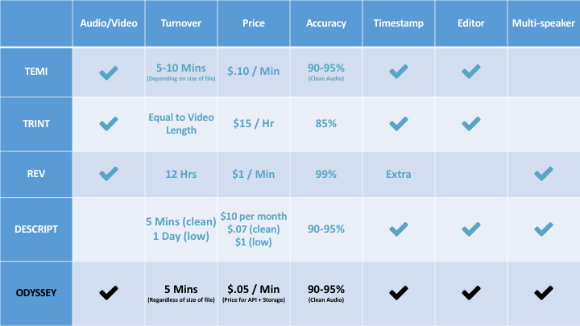
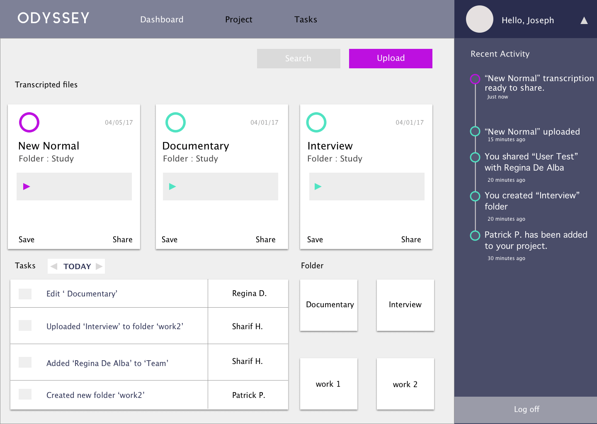

Thesis Statement:
Odyssey is an online tool that helps writers, podcasters, and interviewers upload and transcribe their audio or video files making it easy to search through files.
Brief Overview:
Odyssey is a set of features of a proposed larger application suite meant to assist authors, writers, journalists, and students write and organize all their research in one location. This version of the application focuses solely on audio/video transcription. Odyssey seeks to fill a gap within the market for writing tools, as well as improving the experience and helping users save time through automation. I developed a tool to accurately and quickly transcribe multimedia files using two APIs: IBM Watson and Google Speech. Users are provided time stamped and color coded transcripts in order to easy find and correct inevitable mistakes. A user can click on a word within the transcript to start playing the specific audio/video file from that point. This serves two purposes: to retrieve correction recommendations for edits as well as allowing for users to resume a file from a specific location within the file.
Additional Reading
User Interviews
During my initial research for Odyssey as a research and writing tool I found that all of the top rated tools all lacked one key feature that often accompanies research: transcription. Although products such as Zotero and Evernote provide wonderful features for organization and file organization, they lack the ability to quickly find what you look for within multimedia files.
I conducted interviews initially with three individuals Ana(student), Yassir(Physician), and Leena(Psychologist). When asked about tools they use for their research and writing process, the top mentions were Google Docs, Evernote, and Authero. The features they enjoyed most are the clean design, seamless syncing across devices, and the ability to collaborate. Upon further research with more perspective users I was able to create Personas and User Journeys to identify the biggest pain point in the process for the users.
Sifting through hours and hours of audio and video files searching for the mention of a topic or keyword leads to wasted time. By providing a tool that allows for quick and accurate transcription, users are able to quickly and easily search for keywords or topics they are searching for. After speaking with journalists and podcasters about their pain points in the research process the primary issue was searching through audio/video interviews or recordings looking for a topic. Providing accurate transcript quickly allows for the user to save time, and focus on their work.
Odyssey Competitor Research
Odyssey was born out of the pain point my perspective users described. The ability to upload interviews, talks, conversations and other recordings while receiving written time stamped text documents. The average cost of manual transcriptions lies between $100-200 per hour of audio or video with high turnaround times. The use of software to improve speeds, multiple languages, and lowering costs will help users improve The use of deep learning neural networks, natural language speech to text technology is readily available and constantly improving.
Competition Research

Temi -
- Transcribes Audio/Video files
- 5-10 Mins depending on file sizes
- Cost is $.10 per minute ($6 an hour)
- 90-95% accuracy claimed / tested at 88% accuracy
- Provides Timestamps along with editor for corrections
- Can’t differentiate between speakers
- Uses Google Speech
- Web
Trint -
- Transcribes Audio/Video files
- Video live transcribes as playing requiring the entire length of time
- Cost is $15 per hour
- Accuracy is 87% tested
- Provides timestamps and editor
- Can’t differentiate between speakers
- Uses Google Speech
- Web
REV -
- Transcribes Audio/Video files
- 12-24 hour turnover rate
- $1 per minute ($60 per hour)
- 99% accuracy
- Provides timestamps at a cost of $.25 per minute
- Can differentiate between speakers
- Uses people as transcriptionists
- Web
Descript -
- Audio/Word Processing engine providing transcripts
- 5 mins- 1 Day depending on audio quality
- $.07 per minute ($4.20 per hour high) - $1 per minute($60 per hour low)
- 90-95% accuracy claimed / 93.5% accuracy tested
- Provides timestamp
- Can tell difference between multiple speakers only in multitrack
- Uses Google Speech & people
- Desktop Native Tool
Odyssey 0.5-
- Audio/Video Processing
- >5 mins for transcriptions
- $.05 per minute ($3 per hour)
- Server Costs for storage
- API call cost
- 90-95% accuracy using high quality audio files
- Provides timestamp
- Can’t differentiate between speakers
- Uses IBM Watson and Google Speech Future Version -
- Machine learning algorithm trained using audio books
- Allows for increased accuracy of voices
- Can be trained for multiple languages
- Providing accurate transcript in order to train greatly improves accuracy
- Will extend time it takes to transcribe
- Web Tool

While Odyssey compares rather closely with many of the competing companies it stands out due to some of its key features. Keeping costs low, accuracy high, and quick results is the highest priority. It is for these reasons that we provide access to the service at cost, in the most efficient way possible.
The benefits of Odyssey come from the strategy of transcription, utilizing multiple speech recognition services of Google Speech and IBM Watson, we are able to provide an accurate transcription of the audio provided. Odyssey’s turnover rate far surpasses the competition by providing transcripts within 5 mins of upload, we are able to do this by dividing the files into 30 second segments before transcribing, allowing for multiple files to be read simultaneously
PROCESS of transcription:
- User Uploads File
- Server will divide file into 30 second segments
- Asynchronously send segments to IBM Watson and Google Speech
- Return results
- Compare the results(favor Google due to accuracy)
- Show results with highlighted words with low confidence score(Watson)
- Allow users to edit, play, or export PDF of their transcript